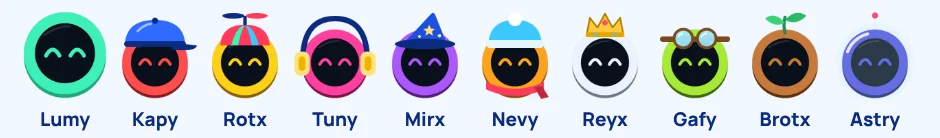
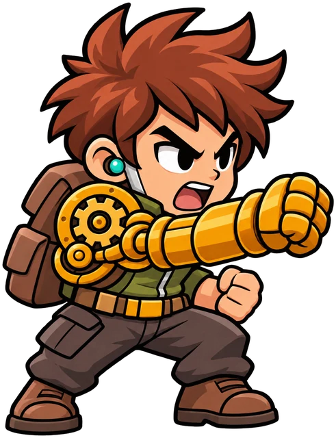
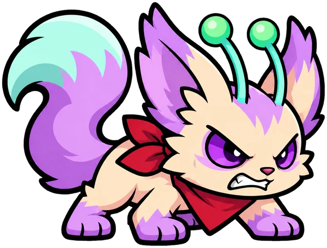
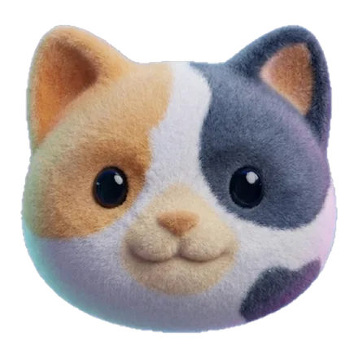
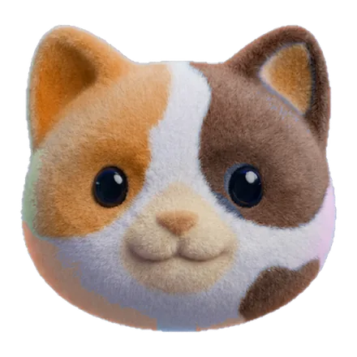
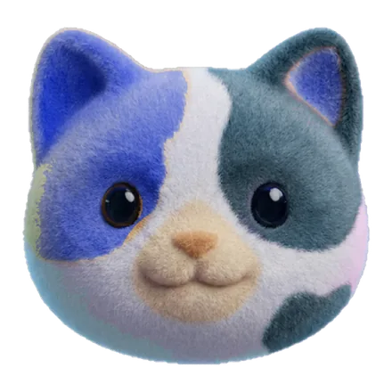
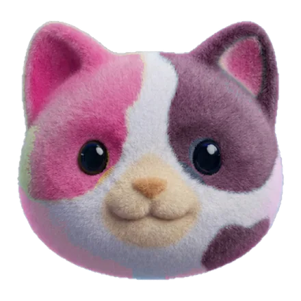
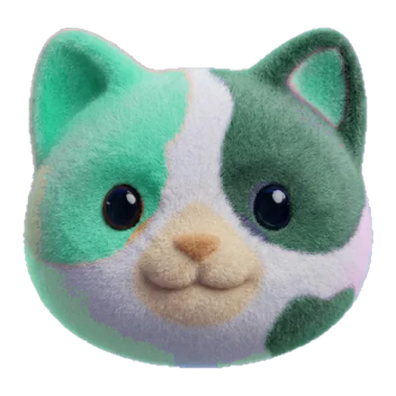

Toca una emoción
Universo Games
Lumy
La ficha menta que enciende el Hub: redonda, con una pantallita oscura y ojos que brillan. Sin boca, sin brazos y sin accesorios fijos.
Es aliada del jugador: cálida, optimista, nunca burlona. Echa porras, da pistas y celebra cada victoria. Vive en todos nuestros juegos, y siempre es menta. Cuando aparece, la ficha se abre como un ojo gigante y se enciende la pantalla.
Sus disfraces
Se ganan jugando durante los eventos de temporada (míralos en Pocket Games Hub).
Calabaza
Noche de BrujasSombrero de bruja
Noche de BrujasCorona de cempasúchil
Día de MuertosSombrero de palma
Evento de MéxicoSus amigos
Las piezas que despertó la luz de Lumy: cada una con su pantallita, ojos del color del jugador y sin boca. Nada de personajes repetidos.

«Prepárate para perder.»
Universo Games
Zarx
El reflejo glitcheado de Lumy. Una noche de tormenta, un chispazo partió la pantalla de Lumy y de su reflejo nació Zarx.
Vive dentro de la computadora: cuando juegas contra la máquina, juegas contra él. Es igual a Lumy, pero en menta deslavado, con desfase de colores cian y magenta, franjas de glitch y ojos rojos pixelados. Presumido, dramático y mal perdedor: un villano de caricatura que nunca da miedo.
- «¿Otra vez tú? Esto será rápido.»
- «Mis circuitos ya calcularon tu derrota.»
- «Lumy no te va a salvar esta vez.»
- «Reiniciando orgullo…»
- «Esto… no estaba en mis cálculos.»

Universo Games · Rusty Orbit
Kairon
Un joven mecánico de 18 años con un brazo protésico de cobre y latón, listo para abrirse paso por la Órbita Oxidada.
Lidera la tripulación de su nave, recluta aliados y droides, y enfrenta a La Orden Blanca planeta tras planeta.

Universo Games · Rusty Orbit
Bibo
Un pequeño hurg de pelaje crema y lavanda con antenas menta brillantes y su inseparable pañuelo rojo.
Es el compañero fiel de Kairon en el hangar y en cada oleada contra La Orden Blanca.
Toca una reacción
Universo Academy
Niko
El mentor de Codemy. Un gatito calicó que nunca juzga tus errores: convierte cada bug en aprendizaje y celebra cada avance contigo.
Es tricolor: blanco de base, mancha caramelo a la izquierda, otra gris carbón y asimétrica a la derecha, hocico crema, nariz café y ojos negros brillantes. Usa lentes redondos azul índigo con puente dorado. Cálido, paciente, curioso y confiable.
Sus pelajes




